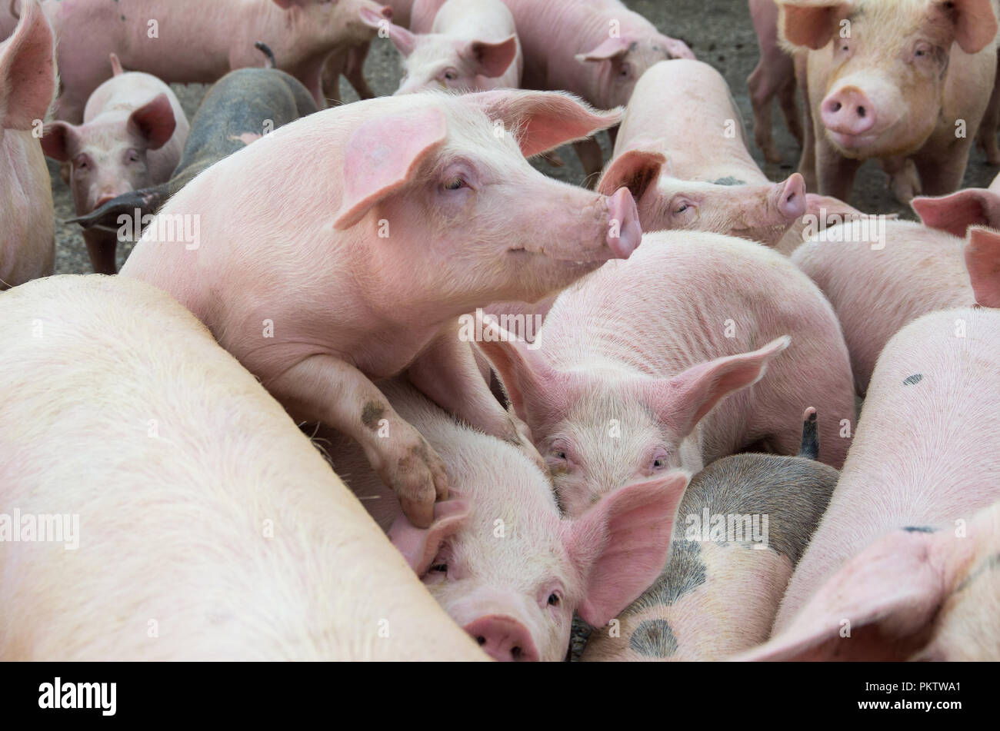

Kokopo Business College Piggery is the farm or facility where pigs (swine) are raised for various purposes, including meat production (pork), breeding, and sometimes for other products like manure. Piggeries are important components of the livestock farming industry, and their management requires careful attention to health, feeding, breeding, and environmental conditions to ensure optimal productivity.
